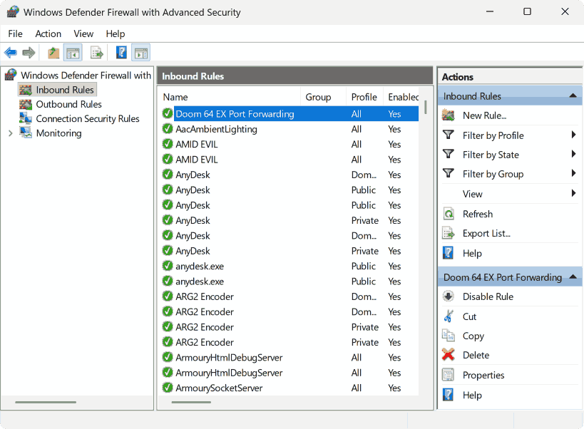
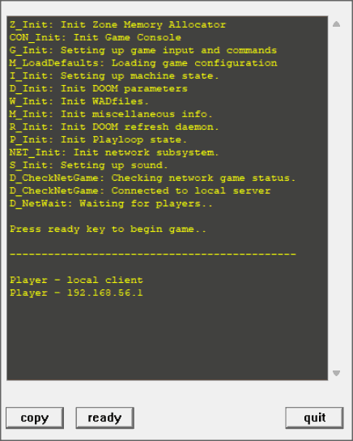

Multiplayer
Originally Doom 64 was going to include a form of multiplayer, which was often included in prior Doom entries, but with split screen this time. However, Doom 64 was delayed and multiplayer was one of the features cut to get the project back on track. The Nintendo 64 would become incredibly popular for multiplayer and developers later regretted not including it with Doom 64. With that said parts of the engine has remnants of multiplayer compatibility and it has been speculated that the fun maps originally were for Doom 64 death match. And now modern Doom engines make it possible to play versions of Doom 64 in multiplayer.
Doom 64 EX
Doom 64 EX experimented with multiplayer support and it is currently the only engine which can play Doom 64 maps in the original map format in multiplayer. Version 2.3 of the Doom 64 EX engine seems to be the most stable to play in multiplayer. Keep in mind that the original Doom 64 maps were not designed for multiplayer, so some of the features like bridges can break in multiplayer.
EX Multiplayer Guide (Windows)
First you will need to forward your port numbers for multiplayer play. Find and open Windows Defender Firewall from the search bar, then click "Advanced Settings" on the left. Now click "Inbound rules" in the top left and click "New Rule..." on the top right. From the "New Rule..." menu click "Port" and go to next. Select "TCP" and for "Specific local ports:" enter "2342" (or whatever the host or you intend on using) then go to next. Select "Allow the connection" and go to next. Then on the "When does this rule apply?" page select "Domain", "Private" and "Public" then go to next. Then on the last page put a basic name for this new rule something like "Doom 64 EX Port Forwarding". After this your ports are setup and you are ready to setup or connect to a multiplayer game.
To have another player connect to you for multiplayer, they will also need to forward their ports, and the host will need to share their IPv4 address. To find your IP address, search for the Command Prompt next to the start menu and open it. Once the Command Prompt has loaded up, type "ipconfig" then click enter, and from this find "IPv4 Address". The number for the "IPv4 Address" on the host's computer needs to be put in the "IP Address" box on the Doom 64 EX launcher window for the person who wants to connect to the host. To host a game run the Launcher that comes with Doom 64 EX, check "Netgame", and select "Listen Server". Players connecting to you will select "Client" instead of "Listen Server". Before players can connect to you, you will need to click "Launch". If done correctly all players will pop up on the host's server window and the host can click on "ready" to launch the game.
ZDoom
A few adaptations of Doom 64 exist for various ZDoom forks, and many of these forks support multiplayer.
Zandronum
Zandronum is a multiplayer-focused fork of ZDoom. Brutal Doom 64 (including Veteran of Hell) and Doom 64 Revolution are designed to run on Zandronum. They both are specifically designed to support cooperative play for the single player maps.
UZDoom/GZDoom
Although UZDoom and GZDoom are primarily focused on single-player, but they also support multiplayer as well. UZDoom and GZDoom can run Doom 64 Revolution and Brutal Doom 64. But further Doom 64 CE and Doom 64 Revolution run in these engines too, although these adaptations do not have multiplayer considerations.